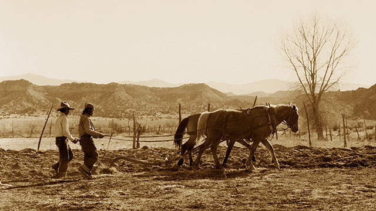

Nuestra Historia
Los Pollos Hermanos es un restaurante familiar informal de rápido crecimiento fundado por Gus Fring y su socio comercial Max Arciniega. Juntos, los "hermanos del pollo" se hicieron un nombre para ellos y para el restaurante de su pequeño pueblo al utilizar sabores y especias auténticos para preparar el pollo más sabroso al sur de la frontera.
Desde entonces, Los Pollos Hermanos ha abierto nuestras puertas en los Estados Unidos, sirviendo a familias como la suya. ¡Y esperamos seguir creciendo!
